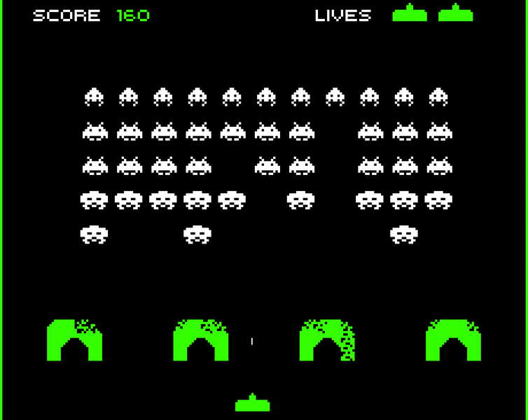
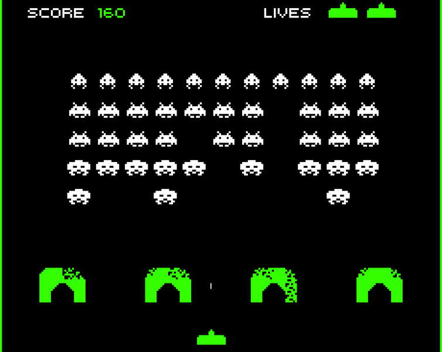
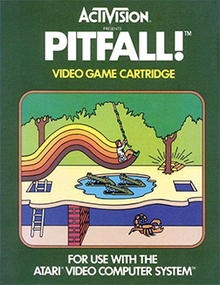
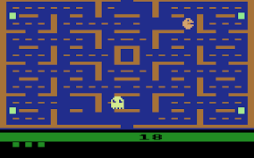
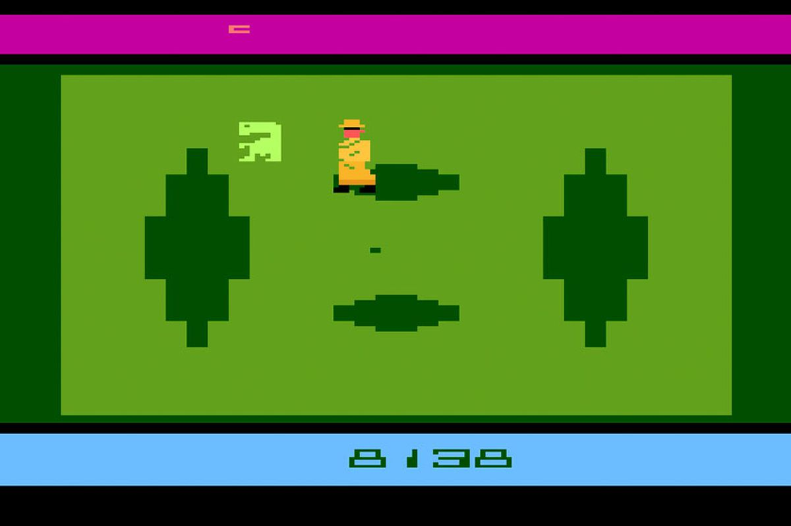
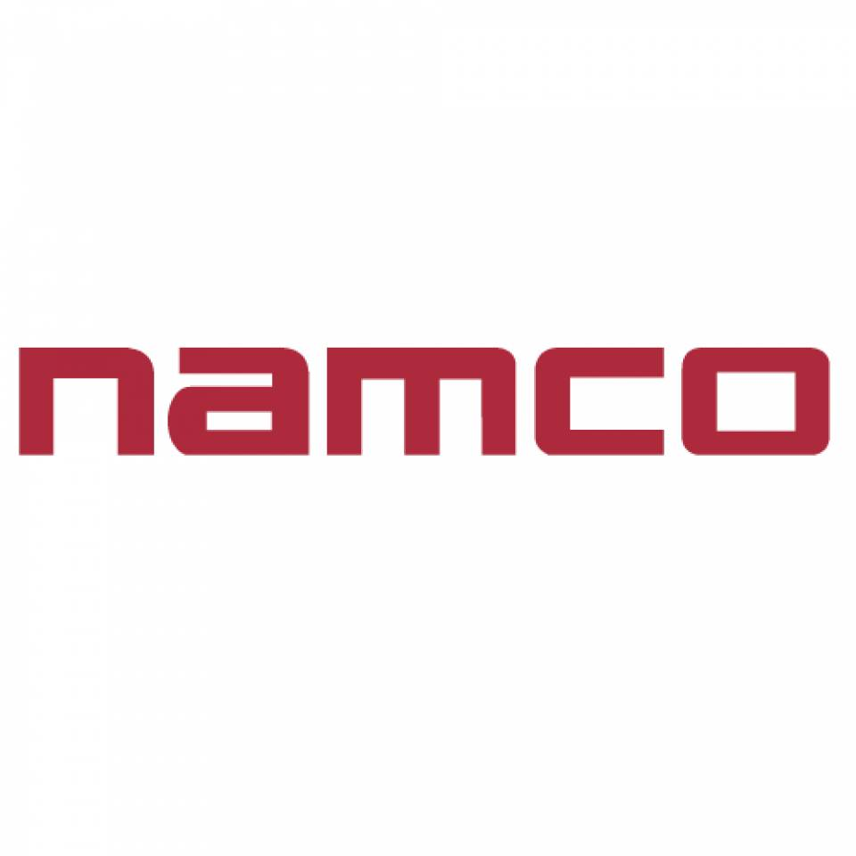
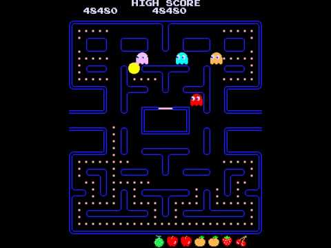
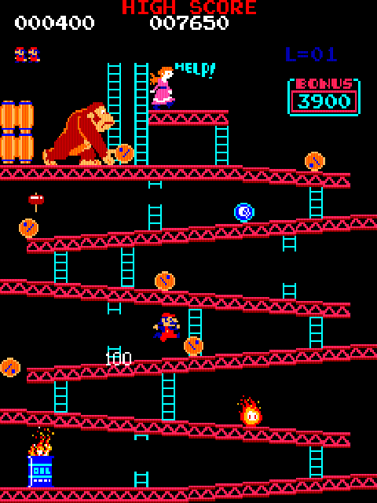

El 1978 la companyia japonesa Taito va llençar l’arcade space invaders amb certs dubtes que van desaparèixer al veure l’èxit del nou títol, arrasant tan nacionalment com internacionalment, col·locant al Japó en l’epicentre del desenvolupament de videojocs.
 

Space invaders anava a estar inspirat en tancs i aeronaus, pero la companyia va pressionar al creador perquè fossin naus i marcians per la influència de Star Wars en aquells anys.
Tornant als Estats Units, Warner des que havia comprat Atari anava cometent un error darrere l’altre. L’empresa Magnavox presenta una demanda de plagi contra Atari a causa de les imitacions de Pong, fent que Bushnell marxi el 1978 provocant un canvi en la direcció de la companyia cap als ordinadors personals acabant en l'època daurada d’Atari.
Per si no fos poc, Magnavox també va aprofitar per treure l’Odyssey 2, que competiria en igualtat de condicions contra la Atari vcs.

El 1979 Atari es va topar amb un nou problema, la marxa de quatre programadors creadors de més de la meitat de les vendes de cartutxos Atari en aquell moment. Es veu que molts dels programadors que treballaven per a aquesta empresa no rebien reconeixement em finalitzar els videojocs, no cobraven el que es mereixien i feien més hores de les que els pertocaven.
Aquests quatre programadors funden Activision, el primer distribuïdor independent per a la videoconsola d’Atari, aviat sorgirien nous distribuïdors com IMAGIC que seguiria l’exemple d’Activision.
El 1982 Activision va llançar l'èxit de vendes Pitfall!, considerat el primer videojoc de plataformes amb permís del Donkey Kong de Nintendo.
Els fabricants de videojocs eren nombrosos, els ingressos de Atari semblaven no tenir sostre tot i les seves males gestions. Això va durar poc, moltes empreses van començar a produir jocs de baixíssima qualitat, aquests van provocar una davallada en les vendes i pèrdua de confiança en els clients.
El mercat estava saturat de jocs molt dolents i Atari en secret va planejar un enterrament massiu de cartutxos de videojocs, consoles i computadores en un abocador de Nou Mèxic els Estats Units. En aquest enterrament hi havia milions de títols desastrosos com una adaptació de Pac-Man amb moltes deficiències o E.T. l'extraterrestre, videojoc en el qual van invertir una fortuna, pagant 25 milions de dòlars només en drets convertint-se en un dels majors fracassos de la història del videojoc.
Les accions d’Atari van caure en picat i Warner que havia adquirit l'empresa anys enrere va acabar per vendre-la, això desembocaria en la fallida de diverses empreses nord-americanes dedicades a la producció d'ordinadors i videojocs.
Van començar a sorgir nombrosos dubtes sobre la viabilitat a llarg termini de la indústria del videojoc, i moltes persones van especular sobre la mort del videojoc per sempre, la gran crisi del videojoc del 1983 havia començat.
Però estaven parlant d’una indústria amb molt de potencial i desenvolupament per davant, el sector del videojoc aconseguiria recuperar l’estabilitat perduda perquè al cap i a la fi Canadà i els Estats Units van ser els únics afectats, el món continuava girant.
Mentrestant al Japó la companyia Namco ja havia llançat Pac-Man l’any 1980. Aquest va portar a la companyia a tenir el rècord Guinness del videojoc arcade més exitós de tots els temps acabant amb el domini de space invaders, es va fer tan famós que va arribar a tenir la seva pròpia sèrie de dibuixos animats i va començar la línia paral·lela del merchandising (venda de roba i productes relacionats amb el joc).
El 1981 apareixia Donkey Kong un altre joc súper exitós, es tracta d’un arcade creat per l'empresa japonesa Nintendo l'any 1981 del que tothom coneix el seu personatge principal. Concebut per Shigeru Miyamoto que en el futur crearia jocs que passarien a la història com: super mario o the legend of zelda.
Una nova consola que va començar a dominar el mercat japonès en 1983 (en plena crisis als Estats Units i el Canadà), es tractava de la family computer o famicon. Dos anys més tard seria batejada amb un altre nom i un altre aspecte per al mercat nord-americà, era la Nintendo entertainment system també coneguda com a NES. La consola que entre altres factors faria renéixer el sector del videojoc als Estats Units i portaria de nou les consoles domèstiques a les llars de tot el món, però d’això ja parlarem més endavant quan es pugui presentar també a Sega la companyia enemistada amb Nintendo.